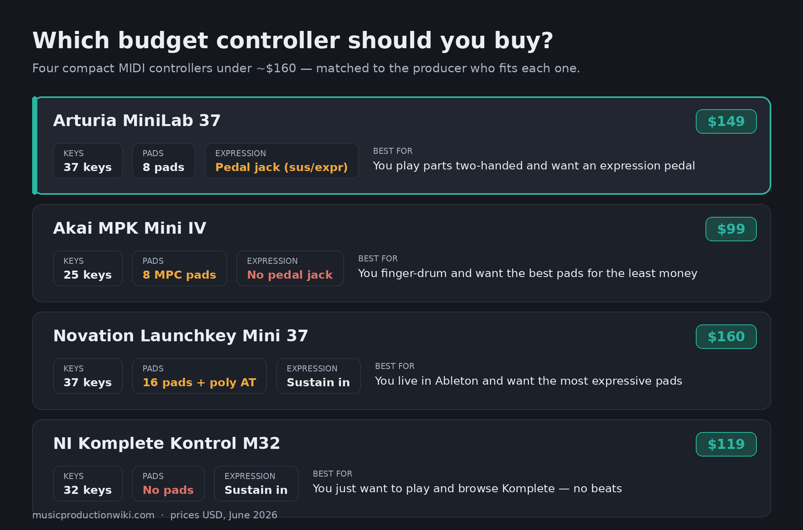
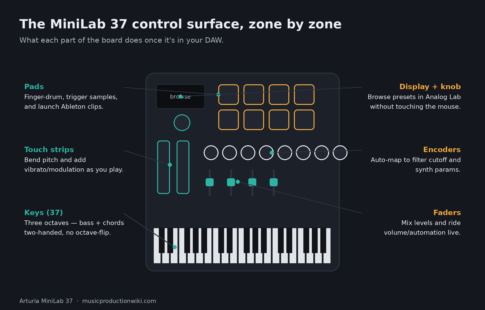
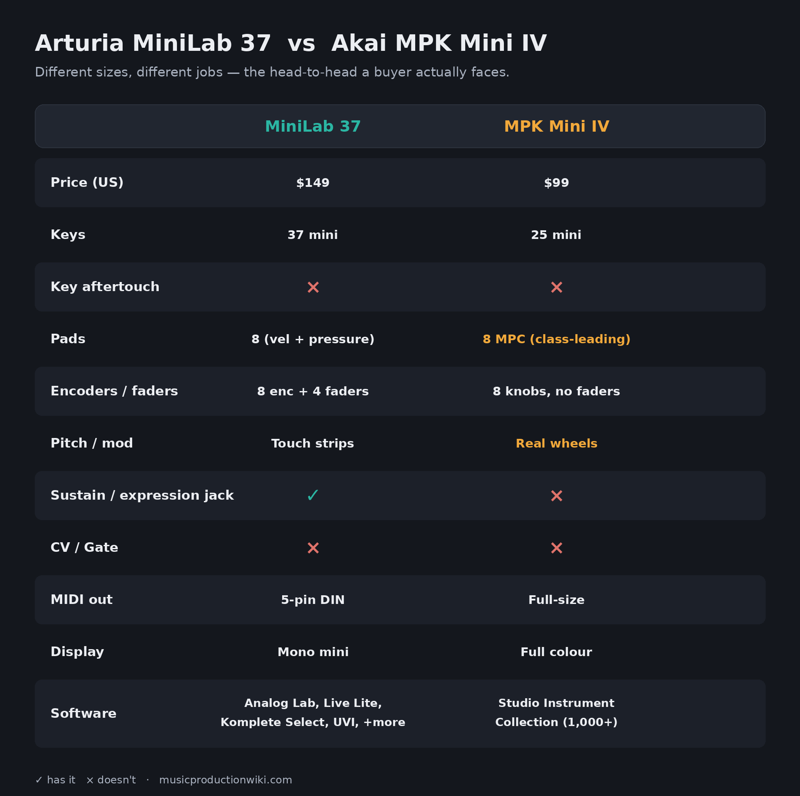

Arturia's MiniLab has spent more than a decade as the controller people quietly recommend when a friend asks what to buy first. It is small, it is cheap, it sounds far better than it has any right to because of the software stuffed in the box, and it fits in a backpack. For all that time it has had one nagging limitation that owners learned to live with: 25 keys. Two octaves is fine for tapping in a melody, but the moment you want to hold a bass note with your left hand and voice a chord with your right, you run out of room and start fighting the octave buttons. Producers asked Arturia for a bigger one for years. On June 11, 2026, they finally got it.
The MiniLab 37 is exactly what the name says: the MiniLab formula with a third octave bolted on, priced at $149 in the US and €149 in Europe. That is a $30 premium over the 25-key MiniLab 3, and for that money you do not just get more keys — you get a reworked control layout with faders, a genuinely uncommon expression-pedal input, and one of the most generous software bundles at any price. This review is built from Arturia's published specs, US retail listings, and the first wave of hands-on coverage, because we do not yet own the unit; every feel-and-playability judgement below is flagged where it comes from a reviewer who has played it. What you will not find here is the most common error already circulating about this controller — and there is a specific one worth clearing up before you spend a cent.
The short version: The MiniLab 37 is the controller to buy if you want to play — three octaves, an expression-pedal jack, four faders, and a software bundle that turns it into a complete studio out of the box. It is not the controller for a pad-first beatmaker, who is still better served by the cheaper, more portable Akai MPK Mini IV. And to kill the rumour early: its keys are velocity-sensitive only. The "aftertouch keybed" spec you may have seen belongs to the KeyStep 37, a different product. Aftertouch on the MiniLab 37 is on the pads, not the keys.
The Verdict
The best compact controller to actually play at $149 — three octaves, an expression jack, and a software bundle that’s a complete first studio, held back only by a fiddly display and merely-good pads.
| Keys & playability | 8.4 | |
| Pads | 7.6 | |
| Controls & mapping | 8.8 | |
| Connectivity | 8.6 | |
| Software bundle | 9.0 | |
| Value | 8.7 |
These are calibrated scores, not a marketing victory lap, and each is earned. Keys & playability (8.4) — three expressive octaves of slim keys, responsive to velocity if a touch springy. Pads (7.6) — eight RGB velocity/pressure pads that do the job, though Akai’s MPC pads remain the class benchmark. Controls & mapping (8.8) — eight encoders, four faders, touch strips, and Arturia’s best-in-class Analog Lab auto-mapping. Connectivity (8.6) — USB-C, a 5-pin MIDI out, and a dual-mode expression/sustain jack rivals don’t offer at this size. Software bundle (9.0) — Analog Lab Intro, Ableton Live Lite, Komplete Select, UVI Model D, Loopcloud and Melodics: a complete first studio in the box. Value (8.7) — a lot of controller and a lot of software for $149, and the extra octave is well worth the $30 over the MiniLab 3. The overall 8.5 isn’t a simple average; it’s weighted toward what this category’s buyer uses every session — playability and mapping.

What you're actually buying for $149
Strip away the marketing and the MiniLab 37 is a tightly packed control surface. You get 37 velocity-sensitive slim keys, the same signature Arturia mini-key profile that has been on every MiniLab, now stretched to a full three octaves. Above the keys sit eight RGB pads in a stacked two-by-four layout — velocity- and pressure-sensitive, with a bank button that doubles them to sixteen assignments for finger drumming and clip launching. To the left of the screen are eight rotary encoders and, new to this layout, four faders, plus a pair of touch-sensitive pitch and modulation strips where most keyboards put wheels.
That fader strip is the quiet headline of the redesign. The outgoing 25-key MiniLab 3 carried sixteen encoders and no faders. Arturia has halved the encoder count to eight and used the reclaimed space for four sliders — a deliberate trade that makes the board far better for the things faders are actually for: mixing levels, drawing in volume automation, and controlling orchestral or synth-layer balances on the fly. Rounding it out is a mini display with a clickable browsing knob for thumbing through presets, transport controls, and an octave/transpose section. You can store up to five user presets on the unit itself, so a guitar-amp rig, a drum kit, and a synth template can all live a button-press apart.
Physically, it is a "wider but shallower" design — Arturia kept the depth tight so it still tucks under a monitor or rides in a bag, then spent the extra width on keys. It comes in black or white, the two are functionally identical, and Arturia ships it with a five-year warranty and a chassis built from at least 50% recycled plastic in fully recycled packaging. None of that affects how it plays, but it tells you the company expects this to be a daily-driver for years, not a disposable starter.

The 37-key question: is this the sweet spot?
The entire reason this product exists is the keybed, so it deserves the most honest look. The case for 37 keys is simple and real: three octaves is the smallest size where two-handed playing stops being a compromise. On 25 keys, the instant you want a low root and a chord on top, you are out of range and reaching for the octave shift mid-phrase. On 37, a reviewer who has spent years testing portable controllers put it plainly — 37 keys is, for them, the ideal size, giving room to play bass and lead at once or to voice wider chords without the claustrophobia of the smaller board (per the Daily Guardian hands-on). That extra octave is the difference between a controller you tolerate and one you actually compose on.
The case against is about feel, not size. These are slim keys, not a piano action. Hands-on reviewers describe the keybed as solid but slightly springy — perfectly playable, responsive to velocity, but not something a trained pianist will mistake for a weighted instrument. That is the correct expectation for the category and the price; nobody buys a sub-$150 mini-key board for nuanced classical dynamics. What matters is that it is expressive enough to capture a performance you would keep, and by the accounts of people who have played it, it is.
Here is the one thing to be precise about, because the internet is already muddling it: the keys do not have aftertouch. They read velocity — how hard you strike — but not the continuous pressure you apply after the key is down. If you have seen a "velocity-sensitive slimkey keybed with aftertouch" line attached to a 37-key Arturia, that is the KeyStep 37, a sequencer-controller in a different price tier. On the MiniLab 37, aftertouch is on the pads. For producers who lean on continuous expression, that distinction is the whole ballgame, which is why we are flagging it three times rather than burying it. (For the underlying concept, see our Bible entry on velocity and how it differs from pressure.)
The pads, encoders, and faders: the control surface
The eight RGB pads are good. They are velocity- and pressure-sensitive, brightly backlit, and laid out in a stacked grid that keeps your hand from wandering — useful for finger drumming and for launching clips in Ableton without looking down. For tapping in beats, sketching drum patterns, and triggering one-shots, they do the job and they do it with feel. What they are not is the best pads in the category. Akai built its reputation on MPC pads, and across budget controllers those remain the benchmark for sheer responsiveness and the kind of muscle-memory feedback that serious finger-drummers obsess over. If pads are the primary reason you are buying a controller, that single fact will steer your decision, and we will come back to it in the comparison.
The encoders and faders are where the MiniLab 37 earns its mapping score. Plug it into Arturia's own Analog Lab and the controls map themselves — turn a knob and you are adjusting the filter cutoff or resonance that matters for that specific patch, no setup required, with the parameter name showing on the mini display. That tight, pre-mapped relationship between hardware and software is the thing Arturia does better than almost anyone in the budget tier, and it is most of why MiniLabs end up recommended so often. Beyond Arturia's ecosystem, the controller ships with automatic mappings for Ableton Live, Logic Pro, Cubase, FL Studio, Bitwig, Reason, Pro Tools, and Digital Performer, and falls back to the universal Mackie Control (MCU) and HUI protocols for anything not on that list — so the transport and faders do something sensible in almost any DAW out of the box.
The touch strips in place of pitch and mod wheels are a love-it-or-leave-it choice that has been on MiniLabs for years. They are space-efficient and they look clean, but a touch strip springs back to center when you lift your finger, which some players find less natural than a weighted wheel for long, held bends. It is a genuine ergonomic preference rather than a flaw — worth knowing if you bend notes often. If you do, it is one of the few places the rival Akai now has a concrete edge, which is a useful preview of the head-to-head.
Connectivity: the expression jack nobody else gives you
This is the section where the MiniLab 37 quietly separates itself from everything near its price. On the back you get a USB-C port — class compliant, so no drivers, and low-power enough to run from an iPad with a USB-C cable or camera connection kit — a 5-pin MIDI DIN output for driving hardware synths and drum machines without a computer in the chain, a Kensington lock slot, and the part that matters most: a 6.3 mm dual-mode pedal input that works in sustain, expression, or footswitch mode.
That expression input is genuinely uncommon at this size. A sustain jack is one thing; an expression-capable input means you can plug in a continuous foot pedal and ride a parameter — volume swells, filter sweeps, wah-style movement — with your foot while both hands stay on the keys. The standard Akai MPK Mini IV simply does not have a pedal input at all, and you generally have to step up to something like the larger MPK Mini Plus to get comparable I/O. For anyone who plays parts rather than programs them — keyboard players, people tracking expressive synth lines, anyone who wants hands-free control of a swell — this single jack is a real reason to choose the Arturia. It is the kind of feature spec-sheet comparisons list in one line and never explain, and it is doing more work here than the line suggests.
The honest limit on connectivity is what is not there: no CV/Gate outputs. If your workflow involves a modular rack or vintage gear that speaks control voltage rather than MIDI, the MiniLab 37 will not drive it directly, and you would look at the Akai MPK Mini Plus or Arturia's own KeyStep family instead. For the overwhelming majority of computer-based and MIDI-hardware producers, though, the MIDI DIN out plus the expression jack covers everything that matters.
The software bundle is the hidden half of the value
If you judge the MiniLab 37 purely as a slab of plastic with keys, $149 is fair but not remarkable. The reason it punches harder is the box of software, which for a beginner is most of what they actually need to make a finished track. Quantifying it honestly: you get Analog Lab Intro, a curated library of several hundred presets pulled from Arturia's flagship V Collection synths — and these are the genuine articles, not watered-down imitations, covering vintage analog, electric pianos, organs, and modern digital tones that would each cost real money as standalone instruments. You get Ableton Live Lite, a real DAW that is more than enough to record, arrange, and mix your first dozen songs. And you get a Native Instruments Komplete 15 Select bundle, with a choice of the Beats, Band, or Electronic edition depending on what you make.
That is not the end of it. Arturia adds UVI Model D (a sampled grand piano), a couple of months of Loopcloud with sample packs, lessons on Melodics to actually learn to play the thing, and the MIDI Control Center software for deep custom mapping. Stack that up and a complete beginner can go from opening the box to exporting a track without spending another dollar — a real DAW, a deep synth library, drums and sample content, and a way to learn. For the buyer this controller is aimed at, the software is not a bonus; it is half the value, and it is the strongest software story in the budget controller class. This is the place where the MiniLab 37's pitch is most clearly "your first complete studio," and it earns the highest score on the card for exactly that reason.
Where it falls short — the honest part
No controller is all upside, and pretending otherwise is how reviews lose your trust. The MiniLab 37 has three real soft spots. The first you already know: velocity-only keys. For producers who build expression with continuous pressure after the keystroke, the lack of keybed aftertouch is a ceiling, and it is the single most important thing to be sure about before buying — if aftertouch is non-negotiable for you, this is the wrong controller and the right answer is a step up to a board that has it.
Second, the display is small and that makes deep editing a chore. The onboard arpeggiator is genuinely capable — plenty of modes, rates, and gate options for a controller this size — but the hands-on coverage is candid that adjusting those parameters through a tiny mono screen, scrolling and clicking one setting at a time, is a slog (per the Daily Guardian review). The display is great for browsing presets, which is what it was designed for; it is not great as an interface for menu-diving into performance features. In practice most people set the arp in software and leave the hardware editing alone, which works, but it is a real friction point if you wanted to tweak on the hardware.
Third, the encoder count dropped from sixteen to eight. The four new faders are worth it for most people, and we said so — but if your workflow leaned on having sixteen knobs of simultaneous control (deep synth tweaking, multi-parameter mapping), the new layout is a sideways move rather than an upgrade. And finally, the recurring caveat: the pads are good, not class-leading. They will not disappoint a casual beatmaker, but a dedicated finger-drummer will feel the difference against Akai's MPC pads. None of these are dealbreakers for the player this is built for. All of them matter if you are the specific buyer they affect, which is exactly why the next section exists.
MiniLab 37 vs Akai MPK Mini IV: which budget controller?
This is the comparison nearly everyone shopping the MiniLab 37 is actually running, so let's do it properly — and the first honest thing to say is that these are not the same size of product. The MiniLab 37 is a 37-key board built around playing parts. The Akai MPK Mini IV (which Akai also styles "MK4") is a 25-key, pad-forward beatmaker's controller that costs $50 less at $99. Lining them up as "which is better" misses the point; the real question is which kind of musician you are.

| Feature | Arturia MiniLab 37 | Akai MPK Mini IV |
|---|---|---|
| Price (US) | $149 | $99 |
| Keys | 37 slim, velocity only | 25 mini, velocity only (Akai/Moog keybed) |
| Pads | 8 RGB, velocity + pressure | 8 RGB MPC, velocity + pressure (class-leading feel) |
| Knobs / faders | 8 encoders + 4 faders | 8 knobs, no faders |
| Pitch / mod | Touch strips | Real pitch + mod wheels |
| Pedal input | Yes — sustain / expression / footswitch | No |
| MIDI out | 5-pin DIN | Full-size MIDI out |
| Display | Mono mini display | Full-color screen |
| Software | Analog Lab Intro, Live Lite, Komplete Select, UVI Model D, Loopcloud, Melodics | Studio Instrument Collection (1,000+ AIR/Akai/Moog sounds) |
Buy the MiniLab 37 if you play. Three octaves let you put a bassline under a chord without thinking about it. The four faders, the expression-pedal jack, and Arturia's Analog Lab integration all point the same direction: this is a controller for someone whose hands are on the keys, voicing parts, riding swells, performing into the DAW. The deeper, more varied software bundle reinforces it. If "I want to actually play keyboard" describes you, the extra $50 over the Akai buys exactly the things you will use.
Buy the Akai MPK Mini IV if you build beats. Akai's MPC pads are the best in the class and the whole controller is designed around them; its newly added real pitch and mod wheels and full-color screen are concrete wins over the Arturia's touch strips and mono display; and at $99 in a 25-key footprint it is cheaper and more portable. For a producer whose workflow is finger-drumming, chopping samples, and triggering — where the keyboard is for tapping in a bassline rather than performing — the Akai is the smarter spend, and the smaller board is a feature, not a compromise. The MiniLab 37 does not beat it at the pad-first game; it changes the game to one the Arturia wins. (For the underlying decision, our explainer on MIDI keyboard vs pad controller goes deeper on which camp you fall into.)
MiniLab 37 vs MiniLab 3: should you upgrade?
If you already own the 25-key MiniLab 3 — and a lot of producers do, because it has been the default first controller for years — the honest question is whether the 37 is worth swapping for. Start with what is actually different, because it is less than the new model number suggests. The two controllers are identical from the back: same USB-C, same 5-pin MIDI DIN output, same 6.3 mm sustain/expression pedal jack, same Kensington lock. The deep software bundle is the same family. The pads, the touch strips, and the mini display carry over. So the I/O and the headline features you may have read about are not reasons to upgrade from a MiniLab 3 — you already have them.
What genuinely changes is the front panel, and it comes down to two things. The first is the extra octave: 37 keys instead of 25, the single feature that makes two-handed playing comfortable and the entire reason this product exists. If the thing that frustrates you about your MiniLab 3 is constantly shifting octaves to reach a bass note or a high voicing, the 37 fixes precisely that, and it is the only controller in the family that does it while staying this compact. The second is the control rework: the MiniLab 3's sixteen encoders become eight encoders plus four faders on the 37. For most people that is an upgrade — faders are simply better than knobs for levels and automation — but if you specifically relied on sixteen simultaneous knobs, the trade cuts the other way and you should think twice.
The math is straightforward. The MiniLab 3 sells for around $119; the MiniLab 37 is $149. Thirty dollars buys you a full extra octave and the fader strip, and costs you eight encoders and a slightly larger (though still shallow) footprint. If you play parts and have ever wished for more room, that is an easy yes. If you mainly program with the pads and tweak with knobs, and 25 keys has never bothered you, there is no urgent reason to switch — your MiniLab 3 still does its job. This is a genuine upgrade for players and an optional one for programmers, and the honest answer depends entirely on which you are.
Build quality, display, and the daily-driver test
A controller you reach for every session has to survive being a daily object, and the MiniLab 37 is built like Arturia expects it to. The chassis is the same rounded plastic the line has always used — hands-on reviewers call it slightly cheap-feeling and not a design-award winner, but resilient enough to take the knocks of living in a bag (per the Daily Guardian hands-on). Backed by a five-year warranty and built from recycled materials, it is clearly meant to last, and the white and black finishes both look at home on a desk. For most people the build is a non-issue: it is light, it is sturdy enough, and it does not wobble under your hands while you play.
The one daily-use friction worth repeating is the display, because it shapes how you actually live with the controller. As a preset browser — its intended job — the mini screen and clickable knob are quick and keep your eyes off the computer during sound selection. As a window into the deeper feature set, it is cramped, and editing the arpeggiator or remapping on the hardware means scrolling through one parameter at a time. The practical takeaway is that you will browse and perform on the hardware and configure in software, which is exactly how most people use a controller this size anyway. Knowing that going in stops it from being a disappointment and turns it into a sensible division of labor.
Who should buy it — and who shouldn't
The MiniLab 37 is the right controller for the beginner who wants their first real instrument-and-studio in one box, the bedroom producer who has outgrown 25 keys and is tired of fighting the octave buttons, the keyboard-leaning player who wants an expression pedal and a board they can perform on, and the experienced producer who wants a clean, compact second controller with great Analog Lab mapping for the desk or the road. For all of those, $149 is money well spent and the software alone justifies a chunk of it. If you want the broader landscape, it slots naturally into our roundups of the best MIDI controllers and the best budget options, and it pairs well with the rest of a starter rig covered in music production for beginners.
It is the wrong controller for three specific people. The finger-drummer who lives on pads should save $50 and buy the Akai. The player who needs keybed aftertouch for continuous expression should step up to a board that has it rather than settle. And the modular or CV-based musician needs the CV/Gate outputs this does not have. Outside those three, it is very hard to be disappointed by a MiniLab 37 at $149.
The bottom line
The Arturia MiniLab 37 is the controller the MiniLab line should have offered years ago, and the wait produced a sharp, deliberate product rather than a lazy size bump. For $149 you get the one feature that actually changes how you work — a third octave that makes two-handed playing real — wrapped in a layout that finally includes faders, an expression-pedal jack that punches well above the price, the best software-mapping ecosystem in the budget tier, and a bundle deep enough to be a complete first studio. It is not flawless: the keys are velocity-only, the display fights you on deep edits, and the pads are good rather than great. But none of that undercuts what it is — the best compact controller to play at this price.
Buy it if your hands belong on keys. Skip it for the cheaper, pad-forward Akai MPK Mini IV if you live on the pads, and step up to a board with aftertouch or CV if those are non-negotiable. For everyone in between — which is most producers buying their first or second controller — the MiniLab 37 earns its 8.5 and its recommendation without much argument.
Getting more out of your MiniLab 37
A controller is only as good as how you use it. Three graded exercises to actually exploit what this board does well — from first-session to advanced.
- Open Analog Lab Intro and load any preset — it auto-maps, so the eight encoders already control that patch's key parameters.
- Slowly turn the first encoder and watch the mini display name the parameter (usually a filter cutoff). Sweep it while holding a chord and listen to the sound open and close.
- Now do the same on a third-party synth in your DAW: right-click a plug-in knob, choose MIDI-learn, wiggle a MiniLab encoder, and you've made your own mapping. Repeat for three knobs you reach for constantly.
- Load a piano or pad sound. Play a root note in the lowest octave with your left hand and hold it.
- With your right hand, voice a triad two octaves up — the thing 25 keys won't let you do without an octave shift. Record it in one take.
- Add the four faders: assign one to the synth's volume and ride it during the take to create a swell. You're now performing dynamics, not drawing them in afterward. (New to building chords? Our chord & key reference tool will speed this up.)
- Plug a continuous expression pedal into the 6.3 mm jack and set the input to expression mode in MIDI Control Center.
- Assign the pedal to a filter cutoff or a reverb/delay send on a lead synth, and store it as one of your five onboard user presets.
- Now perform a lead line with both hands on the keys while sweeping the effect with your foot, and layer the arpeggiator on top for movement. Save the template so the whole rig recalls with one button — this is the workflow the expression jack exists for, and almost nothing else at this price can do it. (Background reading: our Bible entries on modulation and the arpeggiator.)